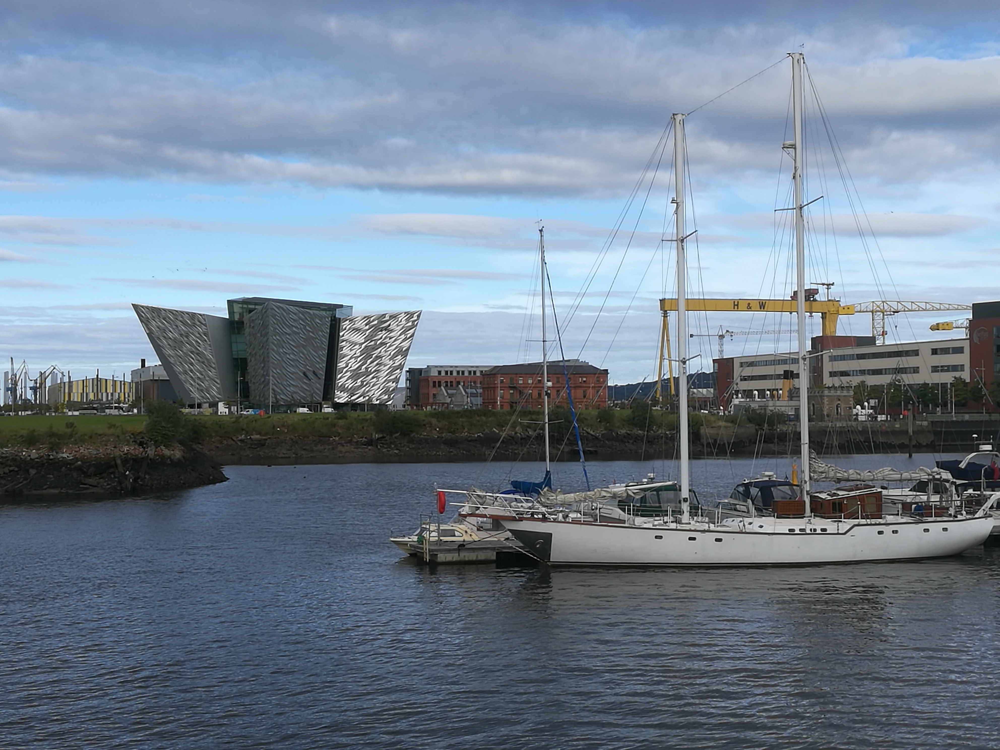

Belfast
Yeah, that is the place I am staying for some time!
What do you have to know about this city...It is the capital of Northern Ireland and has about 333.000 inhabitants. It's one of the safest cities in Europe at the moment, because ISIS cant divide the people because they are already divided, at least that is what a taxi driver told me. Furthermore that guy told me that Belfast people love everyone except themselves. I can at least confirm the first part. All of them are sooo friendly.
But most of you more care about me, so let me tell something about me. Most of the time I am either at the gym, university (yes, unfortunately as well) and in bars or clubs. I also visit the city center sometimes but it is also an exhausting way since I dont have a bike yet.
Here you see a sailing boat in front of the titanic museum which is arguably the most important tourist attraction here. I haven't visited it yet, but I went to the house itself because it is an architectural masterpiece. For those who want to read more about the Titanic

Behind the museum you have an awesome view on the harbour and the sea. You can also see the nearby mountains the Cavehills and the Belfast castle ehich I will visit as well in the near future